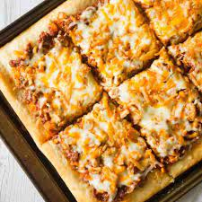

Sloppy Joe Pizza

Description
Sloppy Joe Pizza is an easy ground beef dinner recipe using Pillsbury pizza crust and homeade sloppy joe sauce.
Ingredients
- 1 lb lean ground beef
- 1 cup yellow onion - diced
- 1 cup ketchup
- 1 tsp Worcestershire sauce
- 1/4 cup light brown sugar
- 2 tsp onion powder
- 13.8 oz Pillsbury pizza crust
- 2 cups shredded cheese
- 1/3 cup French's fried onions
Instructions
- Preheat oven to 400F.
- Cook ground beef in large saute over medium-high heat with a dab of butter or margarine.
- Add diced onions to the pan with the ground beef while it's cooking.
- Crumble ground beef well.
- Once ground beef is fully cooked, drain excess grease from the pan and reduce heat to low.
- Dump ketchup, Worcestershire sauce, brown sugar and onion powder into a medium mixing bowl. Stir well.
- Pour sauce on top of ground beef.
- Stir until all of the ground beef is coated in sauce and leave the pan to sit over low heat.
- Press pizza crust out onto a greased 10 x 15 inch baking sheet.
- Place the pan in the oven and bake the crust for 8 minutes.
- Remove the pizza crust from the oven and spread the sloppy joe mixture on top.
- Sprinkle the shredded cheese on top of the sloppy joe mixture.
- Crumble the French's fried onions slightly and sprinkle them on top of the cheese.
- Return the pizza to the oven and bake until the cheese is completely melted and the crust is nicely browned. 6-8 minutes.
- Remove the pizza from the oven and slice.
- Serve and enjoy!